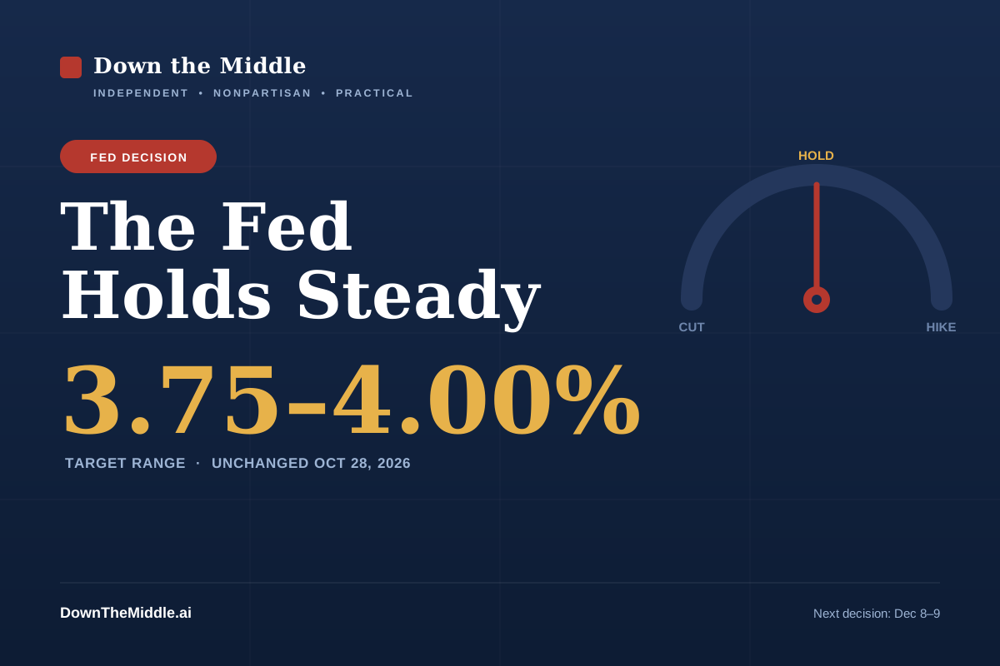

The Fed Holds Rates Steady. What Each Side Wants to Happen Next.
October 29, 2026 · Independent, nonpartisan analysis

The Federal Reserve left its benchmark interest rate unchanged on October 28, holding the target range at 3.75%–4.00%. The decision followed a quarter-point increase in September, and it came with the door left open to another move at the Fed’s final meeting of the year. [1]
A “hold” sounds like nothing happened. In practice it is a choice—and both sides of the economic debate wanted the Fed to lean a different way.
What the Fed actually said
In its statement, the central bank described economic activity as expanding at a moderate pace while noting that job gains have slowed. It pointed to a September report showing the economy added 29,000 jobs with unemployment at 4.2%, and it acknowledged that inflation, though down from its earlier peaks, remains above the Fed’s 2% target. The Fed’s reduction of its bond holdings continues as planned. [1] [2]
The case from the left
The argument more common on the left starts with the labor market. Hiring has clearly slowed—29,000 jobs in a month is a fraction of the pace seen in recent years—and unemployment has drifted up. From this view, keeping rates restrictive risks tipping a cooling job market into a stalling one, and the people hurt first are hourly and lower-income workers. The priority, supporters say, should be protecting employment, and the Fed should be preparing to cut rather than signaling another possible hike.
The case from the right
The argument more common on the right starts with prices. Inflation is still running above the 2% goal, and from this view the Fed has not finished the job. Cutting too early, supporters argue, is exactly the mistake that let inflation relapse in earlier eras; keeping policy restrictive—and preserving the option to raise rates again in December—is the disciplined path to getting prices fully under control. A hold, in this telling, is appropriate caution, not excessive tightening.
Down the middle
Both arguments are describing the same chart from opposite ends. Hiring really has slowed, and inflation really is still above target. The Fed’s hold is not a declaration that either side won; it is an admission that the data is genuinely mixed and that moving aggressively in either direction carries a real risk.
What makes this more than a standard rate decision is that the next move is openly undecided. The Fed preserved the option of a quarter-point increase—not a cut—at its December 8–9 meeting, while stressing that the choice will depend on incoming data. That is unusual language this late in a tightening cycle, and it is why the coming weeks matter more than this one. [2]
What to watch next
Before the Fed meets again on December 8–9, there are two more jobs reports and two more inflation readings. Watch whether unemployment keeps climbing, whether monthly hiring stabilizes or weakens further, and whether inflation resumes its decline toward 2% or stalls above it. If the job market deteriorates faster than prices cool, pressure for a cut will build; if inflation proves sticky, the case for that December hike gets stronger. [3]
For households, the practical takeaway is modest: borrowing costs are not falling yet, so it is worth comparing rates on loans and savings rather than banking on a near-term cut—or bracing for an imminent spike.
Sources and primary documents
- [1] Federal Reserve — FOMC statement, October 28, 2026
- [2] CNBC — Fed holds rates steady, October 28, 2026
- [3] Federal Reserve — FOMC meeting calendar
The target range is the band the Fed sets for the federal funds rate. Data available as of October 29, 2026; figures are subject to revision.